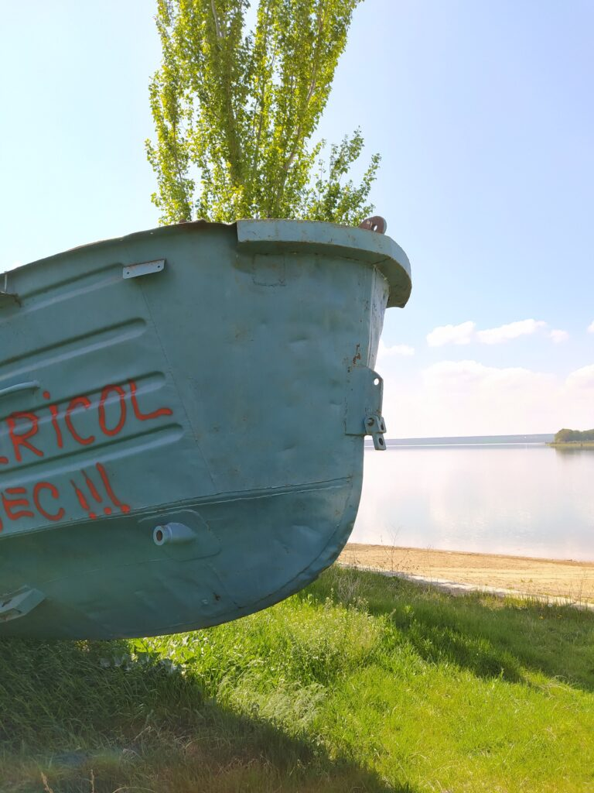
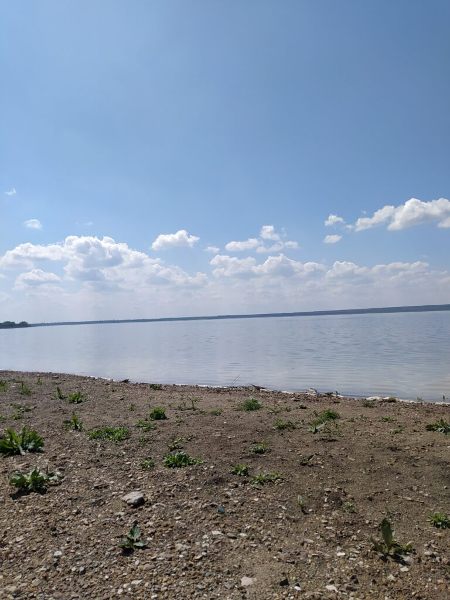
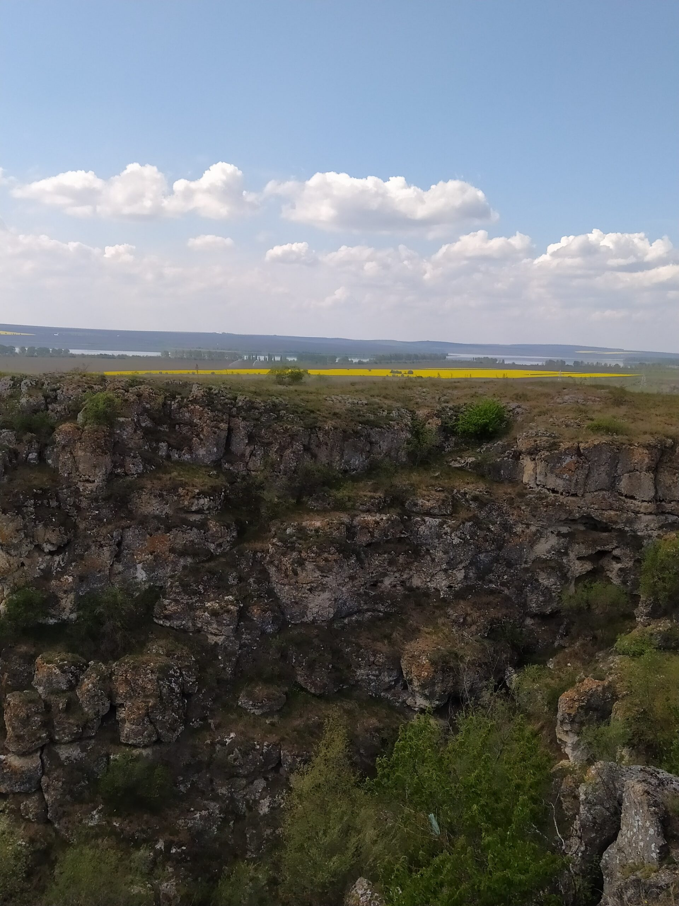
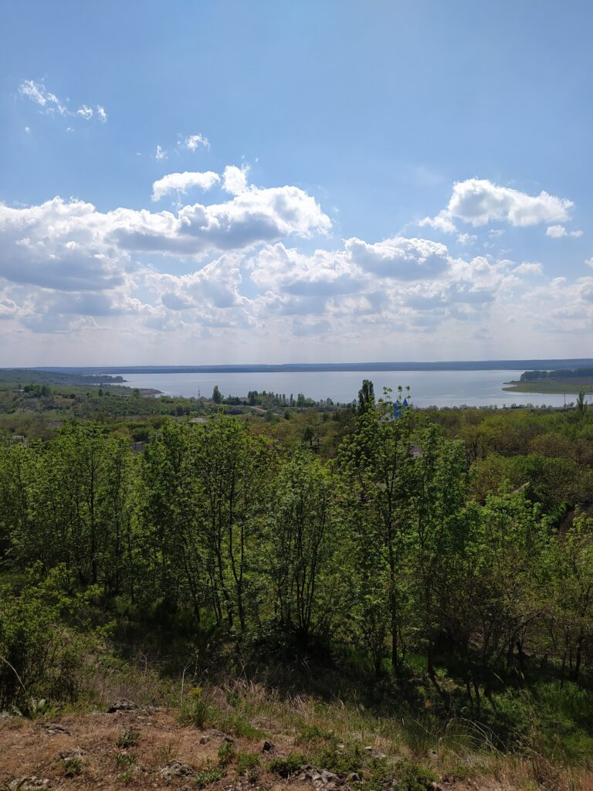
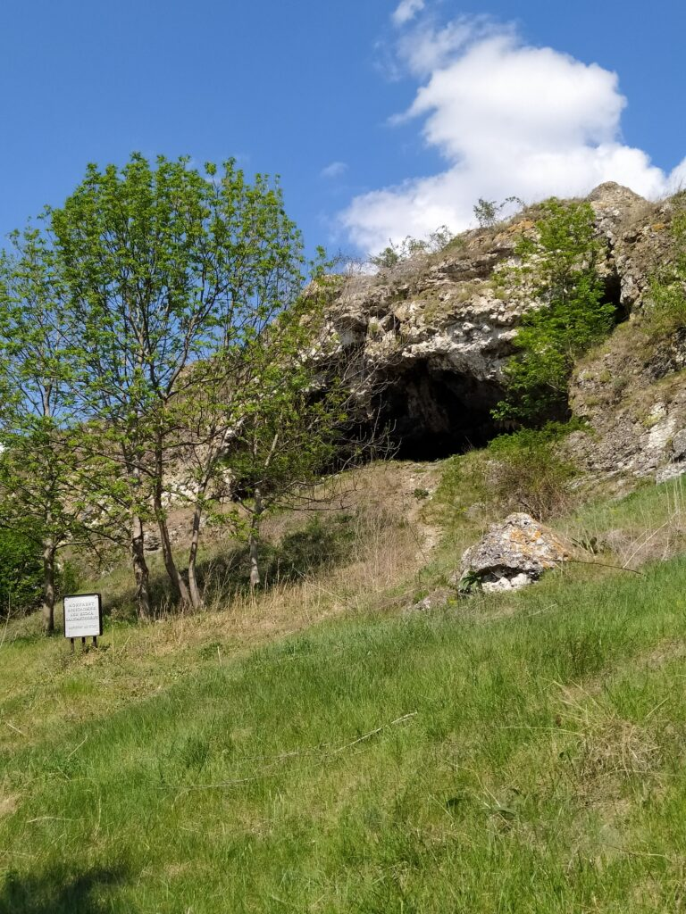
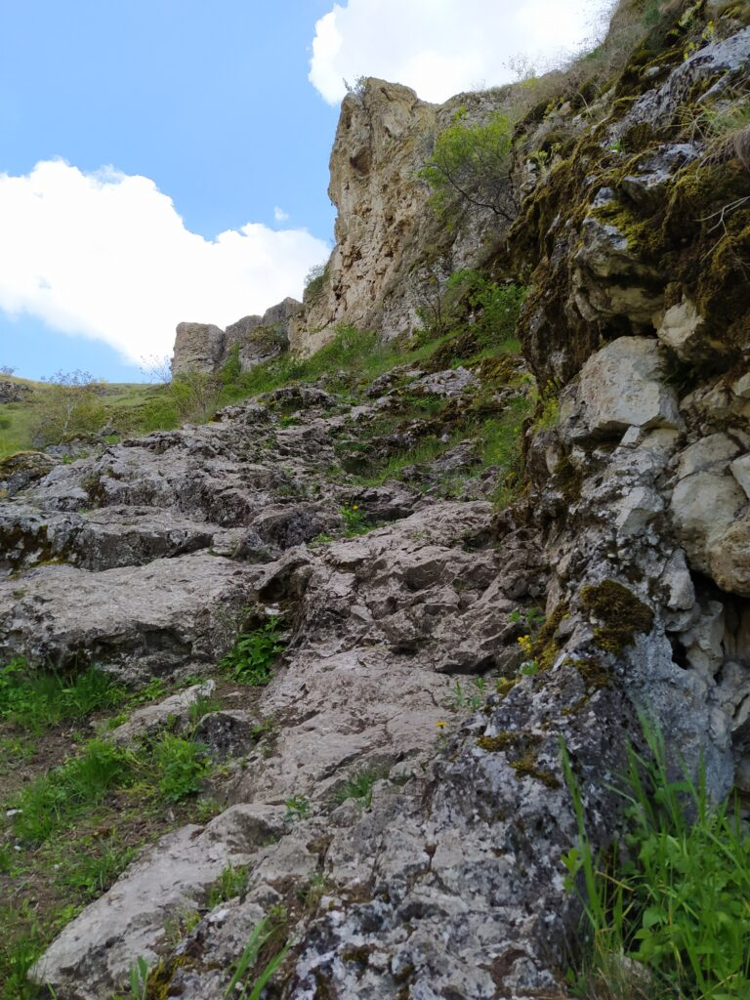
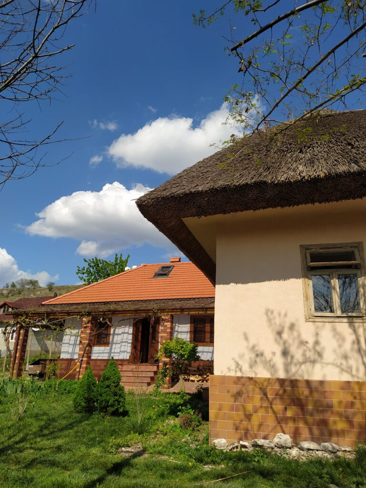
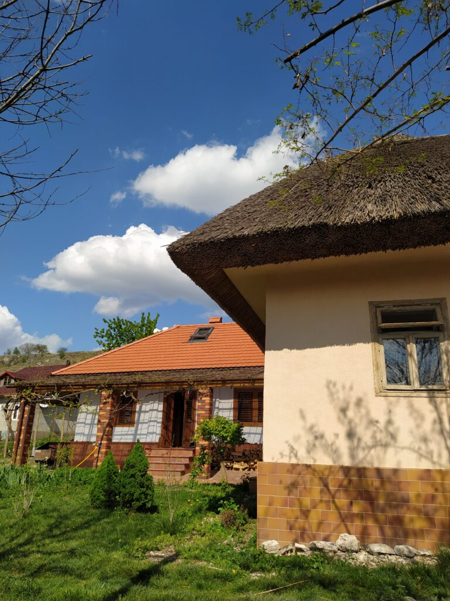

Lacul Costești-Stânca
Duruitoarea Veche este una din cele mai cunoscute destinații turistice din Republica Moldova. Pantele calcaroase abrupte prezente aici sunt marcate de grote înfrumuseţate cu stânci de cele mai neobişnuite forme.
Grota este săpată în stânca de deasupra satului, la o înălțime de 33 de metri. Cele mai spectaculoase sunt stâncile calcaroase, înzestrate cu grote de mărimi diferite, ce transformă această vale a râulețului Duruitoarea într-un loc perfect pentru odihnă.
Lacul Stânca-Costești este cel mai mare lac de pe teritoriul Republicii Moldova. Pe malul lacului sunt numeroase stațiuni de odihnă unde poți petrece timpul într-un mod interesant. Malurile lacului în unele locuri oferă și o plajă relativ curată.
 Nu departe de orăşelul Costeşti, la est de satul cu acelaşi nume, curge râul Duruitoarea, un afluent al râului Ciugur, care a săpat în toltre un defileu adânc.
Pantele sale calcaroase abrupte sunt marcate de grote, înfrumuseţate cu stânci care au cele mai neobişnuite forme. Grota Duruitoarea Veche este cunoscută ca o aşezare străveche din epoca de piatră. Ea constă din trei încăperi cu lungimea totală de 49 m, lăţimea de 5-9 m.
 Grota din Duruitoarea Veche
Grota de lângă satul Duruitoarea Veche este o fostă așezare umană din perioada paleoliticului inferior. Faptul că aceasta a fost un adăpost natural al omului preistoric i-a și adus peșterii renume internațional.
Defileul din Duruitoarea oferă priveliști excepționale către lacul Costești-Stânca și este și un traseu de hiking foarte interesant veți trece printr-un canion, veți urca pe stânci, iar la final vă veți bucura de priveliște uimitoare.
 Casele bătrânești restaurate din Duruitoarea
În Duruitoarea Veche, de asemenea, putem găsi numeroase case restaurate care servesc în calitate de zone de agrement sau pensiuni.
 
